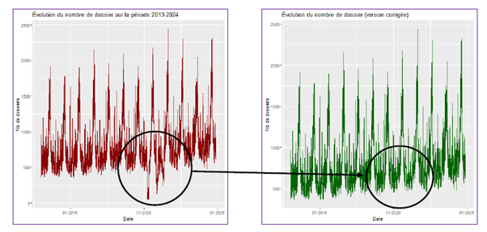
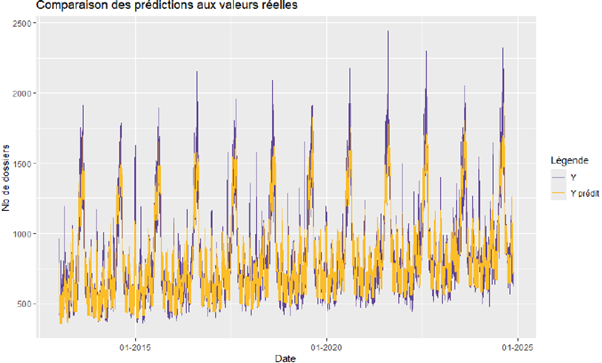
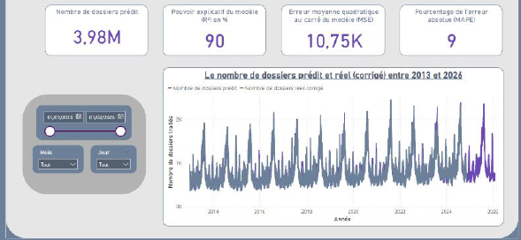

Mener une étude statistique dans un domaine d’application
Dans le cadre de ce projet fourni par un intervenant de l’Inter Mutuelle Assistance, nous devions mettre en place deux modèles de Machine-Learning permettant de faire des prévisions sur le nombre de dossiers auxquels s’attendre sur les 15 prochains mois à l’échelle quotidienne. Pour parvenir à cela, un fichier contenant le nombre d’appels téléphoniques sur la période de 2013 à 2024 a été fourni. Les dossiers sont discriminés en deux catégories différentes : ceux dont le dossier d’assistance couvre un trajet de moins de 50km, et ceux qui couvrent un trajet de plus de 50km.
Une étape d’appropriation et d’analyse des données a été réalisée afin de mieux cerner la variable que nous devions prédire. Ceci nous a révélé la présence d’une rupture nette dans l’activité durant la période du Covid, ce qui s’explique par une baisse du nombre de déplacement durant à ce moment. Pour s’assurer que nos données étaient prêtes à alimenter un modèle de Machine Learning, il a fallu corriger ce biais pour éviter un mauvais ajustement et améliorer la qualité des prédictions. Après avoir identifié clairement les données concernées, elles ont été remplacées par la moyenne des trois dernières années, ce qui a fait disparaître ces ruptures.
Telles quelles, les données n’offraient pas beaucoup d’informations, les fichiers ont alors été enrichis en créant à partir des dates de nouvelles variables à modalité Vrai/Faux, par exemple : si la date est située dans un week-end, une période de vacances (pour chaque zone), un jour férié… Etc. Cet ajout d’information ont permis d’ajouter des variables déterminantes pour nos modèles.
Nous avions fait le choix de prédire seulement le nombre de dossiers couvrant des trajets à plus de 50km. Une fois les données prêtes à être utilisées, deux modèles ont été mis en place avec le langage R. Le premier était une régression linéaire multiple, tandis que le second était une série temporelle. Le choix de second modèle avait été motivé par la présence de variations saisonnières avec de cycles de 366 périodes dans les données. Les modèles ont été entraînés puis testés sur deux jeux données séparés, les résultats étaient satisfaisants : un R² de 84% pour le premier, et 90% pour le second.
Pour faciliter la mise à disposition des prédictions, une interface dynamique a été développée sous PowerBI. Cette dernière permettait de visualiser les prédictions, ainsi que de les comparer à l’activité réelle. Un rapport a également été réalisé pour conclure ce projet.
Compétences acquises :
- Utilisation et compréhension des cas d’usages du Machine Learning
- Interprétation des demandes et les besoins d’un commanditaire
- Réalisation d’un outil de suivi dynamique
- Utilisation de le régression linéaire multiple en R
- Mise en place d’une série temporelle
- Rédaction d’un rapport structuré et illustré
- Sélection d’un modèle statistique adapté à un contexte
Illustrations

Correction de la rupture au sein des données

Comparaison des estimations de la régression linéaire multiple et des valeurs réelles

Aperçu de l'application en PowerBI